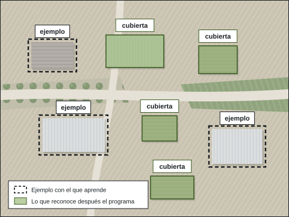

Teledetección con inteligencia artificial
El programa de teledetección que usamos en los trabajos catastrales lo hemos desarrollado nosotros. Hoy reconoce construcciones y piscinas vistas desde arriba, y se puede volver a entrenar para buscar otras cosas que se distingan bien desde el aire.

Cómo aprende y cómo se adapta
Es una red neuronal: en vez de seguir reglas fijas o guiarse por los colores, aprende de ejemplos reales. Con ejemplos de otra cosa se le puede enseñar a buscarla, y después hay que medir cuánto acierta.
Aprende con ejemplos
Hasta ahora ha aprendido de las construcciones y piscinas que constan en el Catastro y de casos revisados a mano: más de 1.200 revisiones, en cuatro rondas.
Se corrige por versiones
Los errores que se confirman al revisar pueden entrar como ejemplos en una versión posterior. Durante un encargo el programa no cambia, y cada versión nueva se mide antes de usarla.
Se configura por municipio
La cartografía, el sistema de coordenadas y las imágenes se cambian en la configuración, sin tocar el programa. Si un municipio codifica las construcciones de otra manera, el programa se para en vez de seguir a ciegas.
Lee otras imágenes
Puede trabajar con otras fuentes, como una ortofoto, pero con cada fuente nueva hay que volver a medir cuánto acierta.
Qué busca hoy y qué más podría buscar
Lo que hace hoy
- Construcciones que no constan en el Catastro: viviendas, naves, porches y construcciones auxiliares con cubierta.
- Ampliaciones de construcciones que sí constan.
- Piscinas que no figuran.
- El porcentaje construido de cada parcela frente a lo que consta.
Lo que se puede estudiar
Se pueden estudiar otras cosas que se distingan bien en la imagen, como placas solares, balsas o invernaderos.
Cada una es un proyecto aparte: ver si se distingue en la imagen, reunir ejemplos, entrenar y medir el acierto en zonas que el programa no haya visto. Le daremos la cifra de acierto cuando la hayamos medido.
Cuánto acierta
Lo medimos en sectores completos que el programa no vio al aprender, y guardamos otra zona sin tocar para una prueba final, que todavía está por hacer.
- Comparando punto a punto con lo que ya está en el Catastro en un municipio piloto, el 93 % de lo que marcó como construido lo era, y encontró el 88 % de lo construido. En piscinas, las cifras fueron del 73 % y del 78 %.
- Estas cifras miden cómo reconoce lo construido en la imagen, no cuántas alertas resultan ser construcciones que de verdad faltan en el Catastro. Eso solo se sabe al comprobarlas.
- Las piscinas son lo más difícil, porque se confunden con toldos, lonas o coches; ninguna se da por buena sin comprobarla.
- De la primera a la segunda versión, las falsas alarmas de piscina bajaron de 368 a 85 por kilómetro cuadrado.
Lo que recibe
Alertas
Una por referencia catastral, ordenadas por prioridad y con el tipo propuesto: obra nueva o ampliación, construcción en una parcela que el Catastro tiene vacía, o piscina.
Porcentajes por parcela
La superficie que se ve construida, la que consta en el Catastro y la que queda sin explicar, con el grado de confianza del programa. Son medidas orientativas.
Capas y tablas
Las capas en GeoPackage, un formato que se abre con los programas de mapas habituales, y una copia en CSV que se abre con Excel.
Imágenes de comprobación
De cada parcela revisada: la imagen, lo que reconoce el programa y lo que consta.
Quién decide
El programa señala; lo que entra en el Catastro lo decide el organismo competente después de comprobarlo.
Una alerta sola no basta para dar por hecho que falta algo en el Catastro, porque el contorno que dibuja el programa es aproximado y hay que verlo en campo. Lo dudoso sale marcado, y una parcela que la imagen no cubre entera sale como «no evaluable».
Preguntas frecuentes
¿Puede detectar cualquier cosa?
Hoy busca construcciones y piscinas. Se puede volver a entrenar para otras cosas que se distingan bien desde arriba, pero no para lo que es demasiado pequeño para la resolución de la imagen ni para lo que no se ve desde el aire, como la altura de una casa. Antes de entrenarlo hay que comprobar que lo que busca se distingue y, después, medir cuánto acierta.
¿Sirve para mi municipio?
Se puede preparar para su municipio cambiando la configuración, pero en cada sitio nuevo hay que comprobar cuánto acierta antes de usarlo.
¿Qué imagen usa?
Una imagen reciente de unos 25 cm por píxel. Su fecha consta en cada entrega.
¿Usa datos de los propietarios?
No. Trabaja con la imagen y la cartografía; los datos de titularidad no los lee.
¿Qué necesita encontrar?
Explíquenos qué quiere localizar, en qué zona y para qué. Le diremos si se distingue en la imagen y cómo lo plantearíamos.
- emiliocontadorbrito@gmail.com
- Calle Matilde Tagle Ortiz, 28, 5.º D, 06006 Badajoz